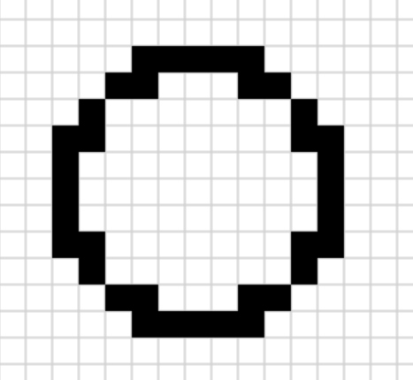

w12 <<
Previous Next >> w10
w11_hw
題目一:(以"*"畫出空心圓)
心得:利用ai打出需要的brython程式，過程中嘗試了解ai所打出程式的意思，但有理解的地方不多，還需要多加努力。
程式:
def print_circle():
# 11x11 的字元區域，圓心在 (5, 5)，半徑為 5
cx, cy, r = 5, 5, 5
# 繪製空心圓
for y in range(11):
for x in range(11):
# 計算 (x, y) 是否在圓邊上
if abs((x - cx)**2 + (y - cy)**2 - r**2) < 2:
print('*', end=' ')
else:
print(' ', end=' ')
print() # 換行
# 呼叫函數顯示圓形
print_circle()
題目二:(以方塊畫出空心圓)
心得:跟題目一一樣是靠ai打出需要的brython程式，需要注意的地方在於讓方塊11*11(為了讓方塊有中心點)，該程式篇幅較上一題題目還長，理解程度還可以，但還是有看不懂的地方需要多認識一下。
程式:
from browser import html
from browser import document as doc
# 利用 html 建立 canvas 超文件物件
canvas = html.CANVAS(width=400, height=400)
brython_div = doc["brython_div1"]
brython_div <= canvas
# 每一格的 pixel 數
gs = 20
# gs*tc = canvas width and height
ctx = canvas.getContext("2d")
def dRect(lux, luy, w, h, s=1, c='#ff0000'):
ctx.lineWidth = s
ctx.strokeStyle = c
ctx.beginPath()
ctx.rect(lux, luy, w, h)
ctx.stroke()
def grid(width, height, grid_pix):
# x 方向共 width 格
# y 方向共 height 格
# grid_pix, 每一個的 pixel 點數
# 利用迴圈與座標增量繪圖
for i in range(width):
for j in range(height):
dRect(i*grid_pix, j*grid_pix, grid_pix, grid_pix, 1, "lightgrey")
def fill(x, y, color):
# 填充指定格子
ctx.fillStyle = color
ctx.fillRect(x * gs, y * gs, gs, gs)
def draw_hollow_circle(cx, cy, radius):
# cx, cy: 圆心坐标 (以格子为单位)
# radius: 半径 (以格子为单位)
for x in range(-radius, radius + 1):
for y in range(-radius, radius + 1):
# 检查点是否在圆的边缘
distance_squared = x**2 + y**2
if radius**2 - radius <= distance_squared <= radius**2 + radius:
fill(cx + x, cy + y, "black")
# 繪製 20x20 網格
grid(20, 20, gs)
# 在 (10, 10) 格為圓心繪製空心圓，半徑為 5 格
draw_hollow_circle(10, 10, 5)

w12 <<
Previous Next >> w10